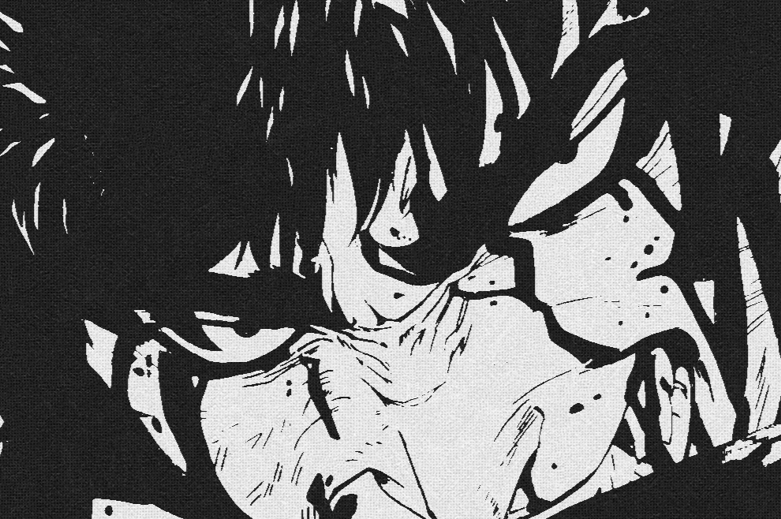
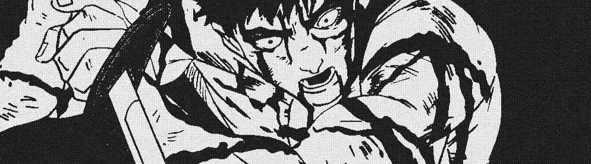
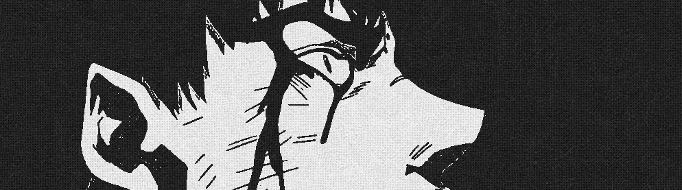
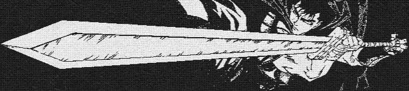

Guts is a lone warrior who was born from a hanged corpse and raised as a mercenary by his abusive adoptive father Gambino after the death of his adoptive mother, Shisu. It came to a head when Guts was forced to kill a drunk Gambino in self-defense, fleeing his mercenary group and becoming a wandering sellsword. His fearsome reputation catches the attention of Griffith, the charismatic leader of a mercenary group known as the Band of the Hawk. Griffith forces Guts to join the group after defeating him in battle, with Guts becoming his best fighter and main confidante. The Band is hired by the kingdom of Midland to help in its century-long war against the Chuder Empire. Guts learns of Griffith's desire to rule a kingdom of his own and his mysterious pendant known as a Behelit. The Behelit is instrumental when they are spared by Nosferatu Zodd, a monstrous immortal who leaves Guts with a cryptic warning of a painful demise for being Griffith's friend.


